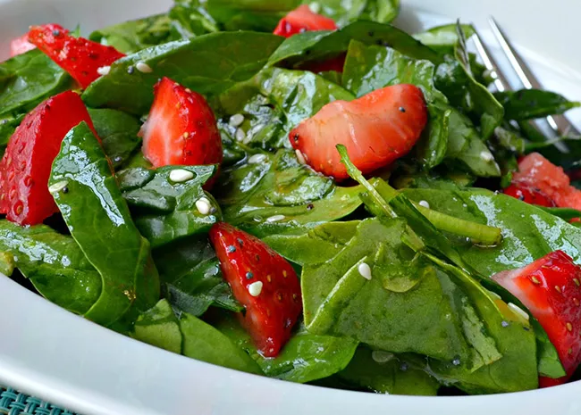

Salads

Description:
This is a very healthy, yet delightfully different salad. A flavorful addition could be small slices of red onion
Ingrediant
- 2 bunches spinach, rinsed and torn into bite-size pieces
- 4 cups sliced strawberries
- ½ cup vegetable oil
- ½ cup white sugar
- ¼ cup white wine vinegar
- 2 tablespoons sesame seeds
- 1 tablespoon poppy seeds
- ¼ teaspoon paprika
Etape:
- Toss spinach and strawberries together in a large bowl.
- Whisk oil, sugar, vinegar, sesame seeds, poppy seeds,
and paprika together in a medium bowl. Pour over the spinach and strawberries, and toss to coat.